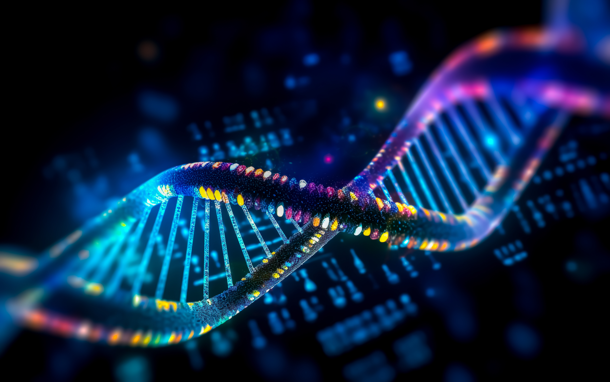

The Story
If the cell is a bustling, highly organized factory, then the genome is the heavily guarded server room containing all the architectural plans. Written on a molecule known as DNA (Deoxyribonucleic acid), this code is stunningly elegant. Instead of the zeros and ones used by computer software, biological life runs on a four-letter chemical alphabet: Adenine (A), Cytosine (C), Thymine (T), and Guanine (G). The specific arrangement of these four letters across billions of base pairs forms the genes that determine everything from the color of a bird's feathers to the shape of a human heart.
The structure of DNA itself is a marvel of evolutionary engineering. Shaped like a twisted ladder—the famous double helix—it is designed perfectly for its two main jobs: storing massive amounts of data compactly, and easily unzipping itself to be copied when a cell divides. Every time a new organism is born, it inherits half of this code from each parent, creating a brand new, unique combination of instructions while still carrying the ancient, unbroken chain of successful survival traits passed down through millions of generations.
What is perhaps most profound about the genome is its universality. Whether you are examining a towering oak tree, a glowing jellyfish, or a human being, the underlying programming language is exactly the same. We share roughly 60% of our DNA with a banana and over 98% with chimpanzees. Reading the genome does not just teach us how a single organism is built; it reveals the undeniable, literal truth that every living thing on Earth is related, woven from the exact same biological threads.

Philosophical Questions
Are we merely the universe's way of storing information?
We often view DNA simply as the mechanism that makes "us." But what if the opposite is true? From a purely biological perspective, an organism's primary function is to survive long enough to pass on its genetic code.
This perspective challenges our sense of self-importance. It suggests that our bodies, our civilizations, and our complex emotions might just be highly elaborate, temporary vehicles constructed by DNA to ensure the survival and replication of its own ancient information.
If the code can be rewritten, what does it mean to be natural?
For billions of years, the genome was edited only by the slow, blind forces of natural selection and random mutation. Today, with tools like CRISPR, humanity has the unprecedented power to intentionally cut, paste, and rewrite the code of life in real-time.
This forces us to confront a terrifying and exhilarating frontier. When we can engineer out diseases, alter physical traits, or even create synthetic lifeforms from scratch, the boundary between "biology" and "technology" collapses. It asks us if we are ready to take the evolutionary steering wheel.
Does a shared code demand a shared responsibility?
Knowing that the fundamental language of our DNA is identical to the flora and fauna around us removes the illusion that humanity sits entirely separate from the rest of nature. We are built from the same biological library.
This scientific fact carries a heavy philosophical weight. If we are literally family to the ecosystems we are destroying, then preserving global biodiversity is not just an act of environmental charity—it is an act of preserving our own extended genetic heritage.